GUIDE ADMINISTRATEURRecevoir et gérer une commande
Du tableau de bord à la fin de l'intervention : voir la localisation, regarder les photos, changer le statut en un clic, contacter le client.
Clean Up · Réservation de nettoyage à domicile · Dakar
Captures réalisées sur des données d'exemple (clients fictifs).
Les cinq statuts
Une commande suit un chemin simple. Chaque changement se fait en un clic.
| Statut | Signification |
|---|
| Nouvelle | Le client vient de commander. Rien n'est encore confirmé. |
| Confirmée | Vous avez validé le créneau (affecter une équipe confirme aussi la commande). |
| En cours | L'équipe est sur place. |
| Terminée | Intervention faite. Statut final. |
| Annulée | Commande annulée (le client est prévenu). Statut final, avec demande de confirmation. |
1Se connecter et lire le tableau de bord
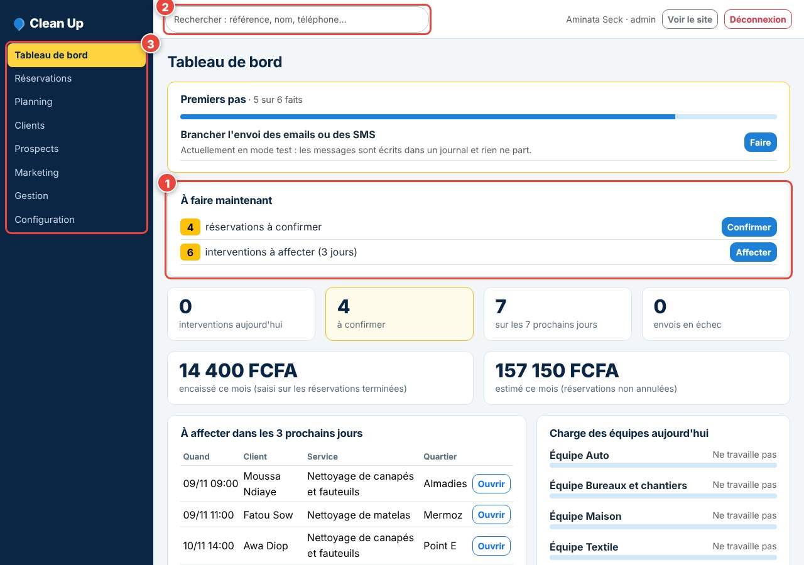
- 1« À faire maintenant » : les nouvelles commandes à confirmer, les interventions du jour. Le statut se change directement depuis cette liste.
- 2La recherche (référence, nom, téléphone) est toujours en haut.
- 3Le menu : Réservations, Planning, Clients, Marketing, Configuration.
Recevoir une commande
La liste réunit tout ce qu'il faut pour décider, sans ouvrir de fiche.
2La liste des commandes
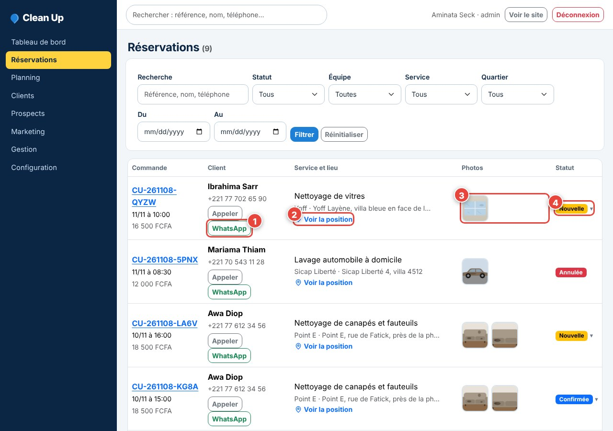
- 1Contact rapide : « Appeler » ou « WhatsApp » avec un message déjà rédigé.
- 2« Voir la position » ouvre la localisation du client.
- 3Photos envoyées par le client : touchez une miniature pour les agrandir sans quitter la liste.
- 4Le statut : touchez-le pour le changer.
3Changer le statut en un clic
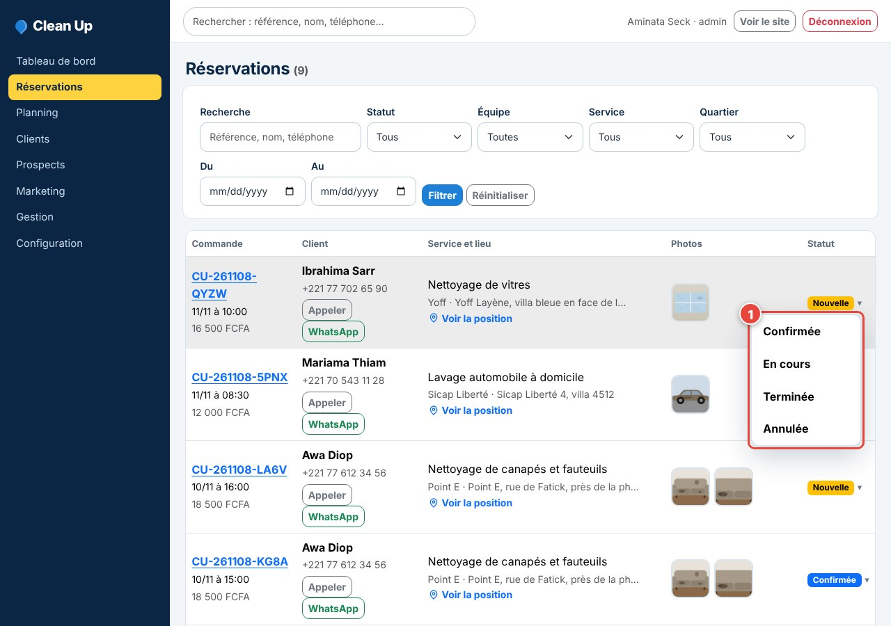
- 1Le menu propose uniquement les statuts possibles à cet instant. Un clic suffit ; seule l'annulation demande une confirmation.
Le client reçoit automatiquement le message correspondant (si les canaux de messagerie sont configurés).
La fiche d'une commande
Un seul écran : statut, client, adresse, photos, équipe.
4Statut et coordonnées du client
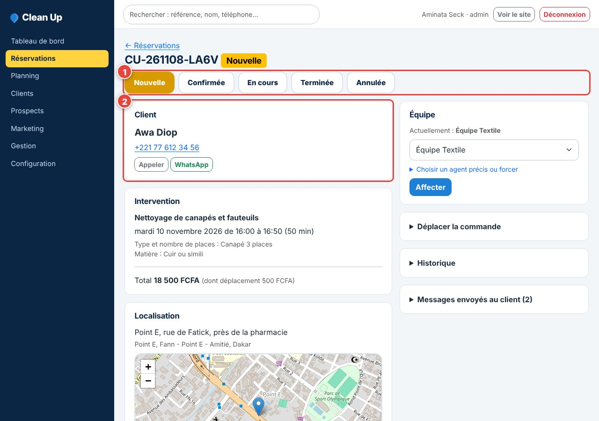
- 1Les cinq statuts en haut : le statut actuel est surligné, les autres sont cliquables.
- 2Le bloc Client : numéro cliquable, boutons Appeler et WhatsApp.
5Consulter la localisation
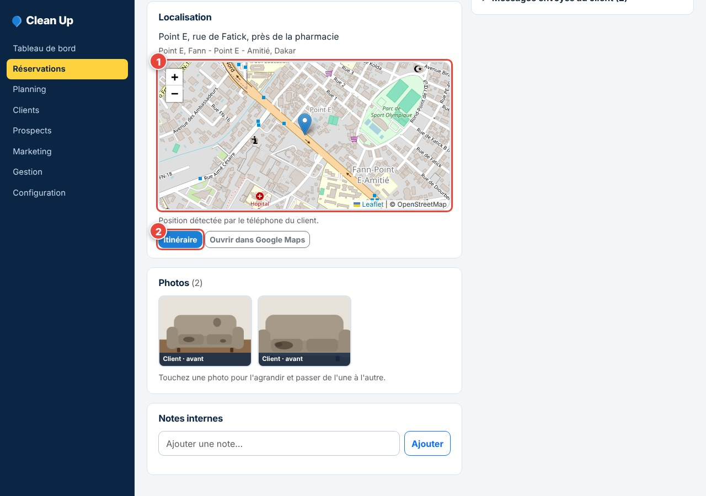
- 1La carte montre l'endroit indiqué par le client (position GPS ou repère déplacé).
- 2« Itinéraire » lance la navigation dans Google Maps vers le client.
Le texte sous la carte précise si la position vient du GPS ou a été placée à la main.
Photos et équipe
Voir l'état des lieux avant d'envoyer quelqu'un.
6Visualiser les photos avant intervention
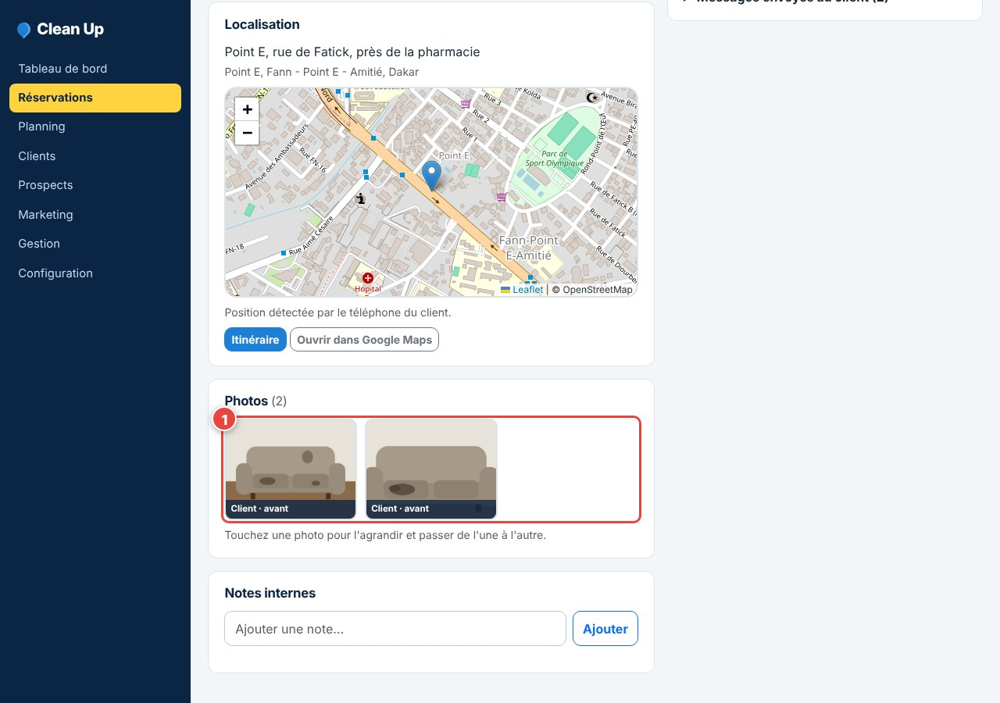
- 1Toutes les photos de la commande sont sur la même page, avec la mention « Client · avant ».
7Agrandir
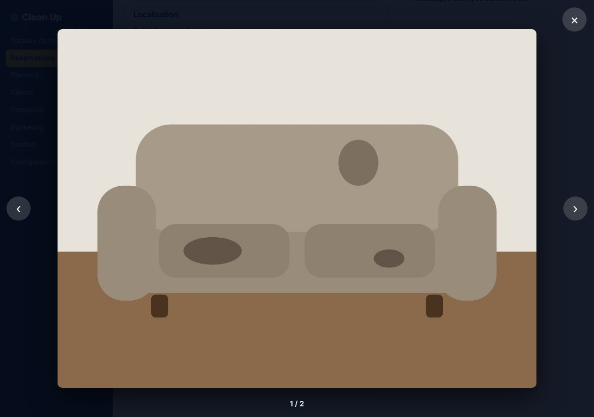
Touchez une photo : elle s'agrandit, les flèches passent à la suivante. Échap ou la croix pour fermer.
8Affecter une équipe
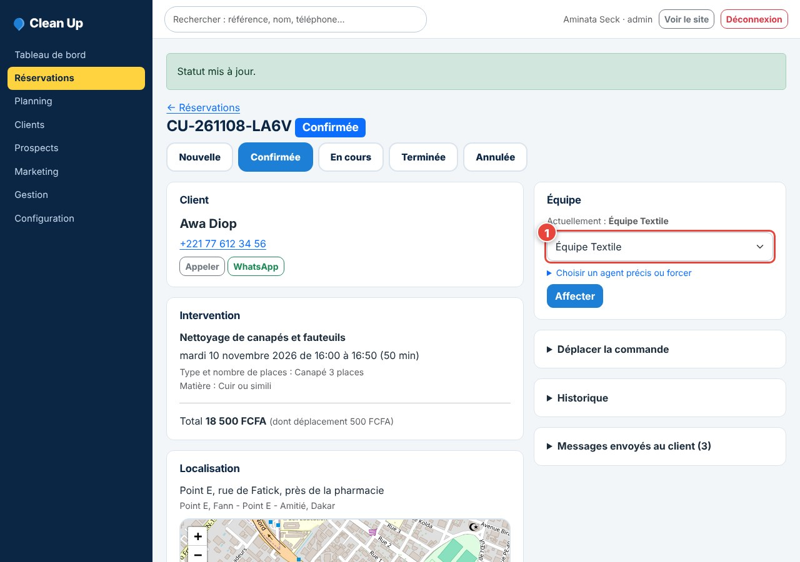
Choisissez l'équipe puis « Affecter » : la commande passe en Confirmée.
Retrouver et configurer
Quelques réglages à connaître.
9Rechercher une commande ou un client
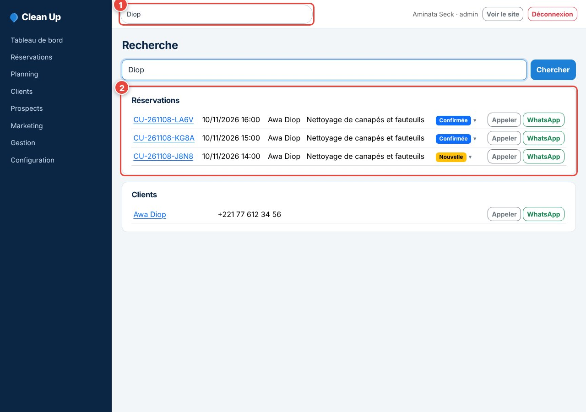
- 1La recherche couvre la référence, le nom et le téléphone.
- 2Les résultats sont groupés par type, avec le même menu de statut.
10Services et tarifs
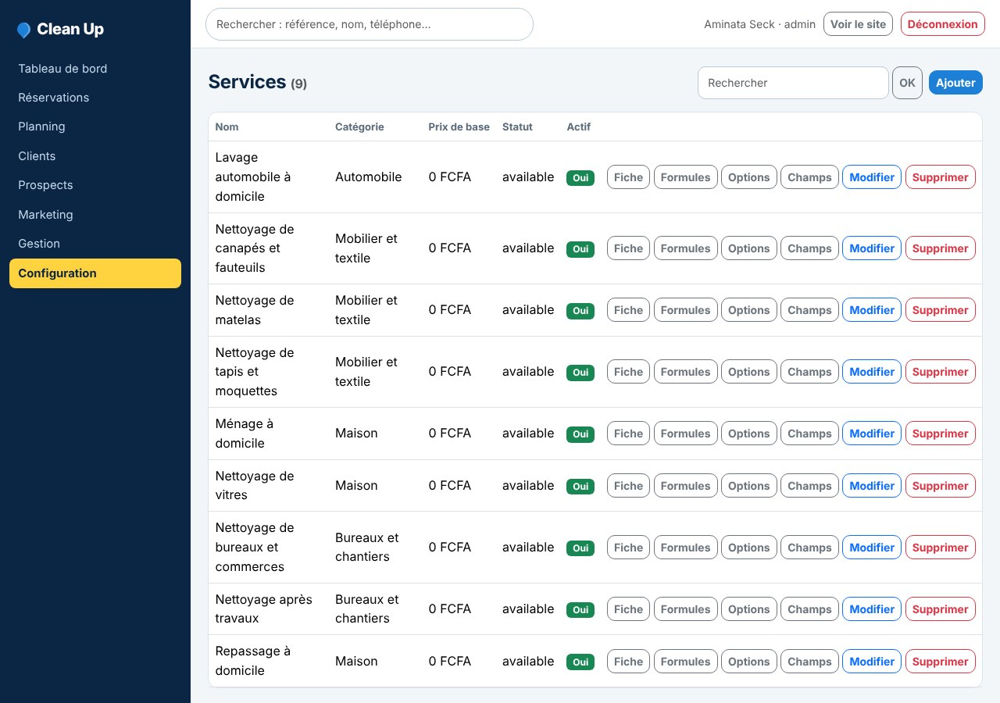
Menu Configuration puis Services : prix, durée, formules et options de chaque service.
11Quartiers de Dakar
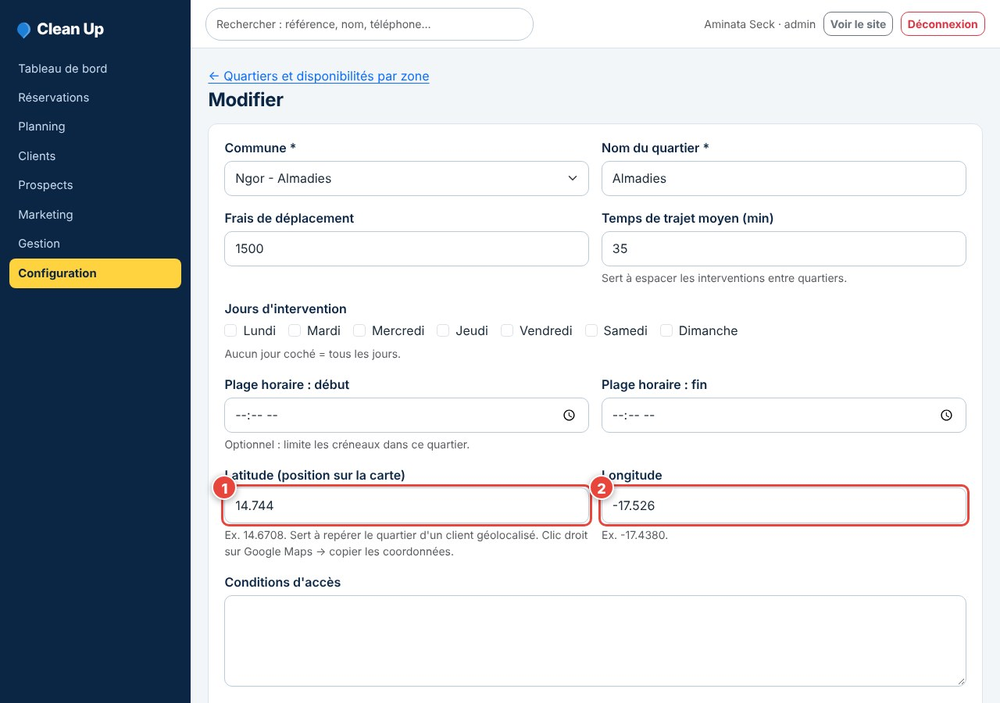
Chaque quartier a des frais de déplacement et des coordonnées GPS ; corrigez-les selon la réalité du terrain.